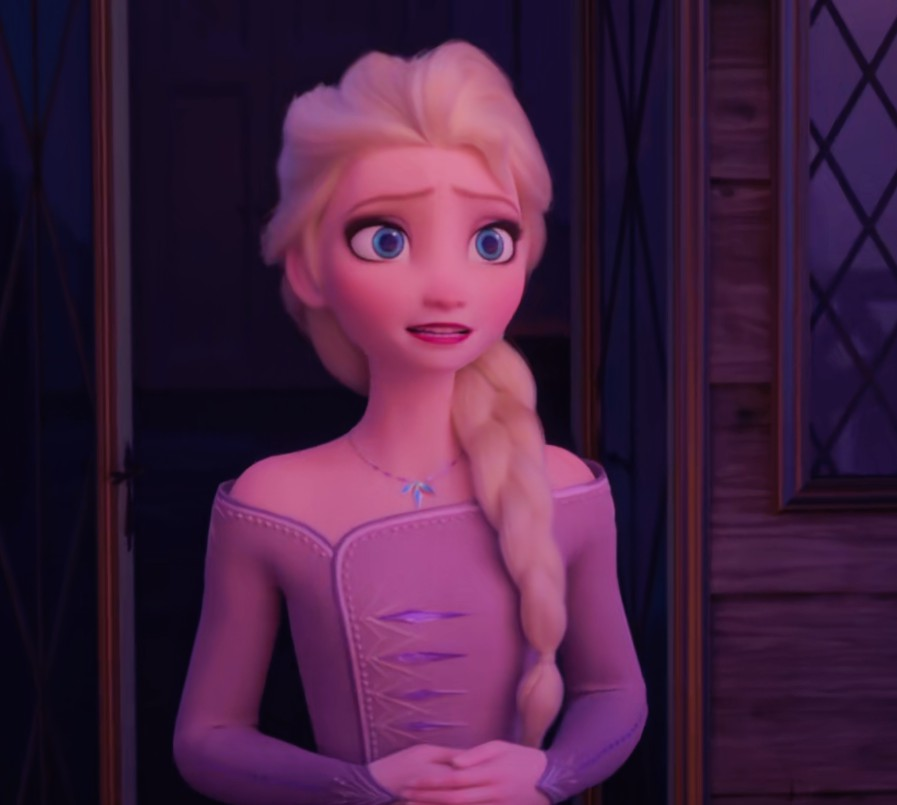

背景与形式：2020年疫情期间，迪士尼推出了一系列以雪宝为主角的"居家日常"微短剧，每集1-2分钟，共20集。全片由雪宝的配音演员 Josh Gad 在家中录制配音，动画团队远程制作，以"雪宝在城堡里的一天"为主题，记录他各种搞笑又温馨的日常。
内容亮点：每集聚焦一个日常场景——雪宝尝试做早餐（把煎饼甩到了天花板上）、雪宝在家健身（用胡萝卜当哑铃）、雪宝唱歌剧（把窗户震碎了）、雪宝尝试冥想（结果睡着了）、雪宝给斯文讲睡前故事（把自己讲哭了）等等。全片没有连贯剧情，每集独立成篇，以雪宝天真乐观的性格制造笑点，同时传递"居家也能快乐"的温暖信息。
时间线定位：独立于主时间线，可视为电影1之后、电影2之前的"日常碎片"，但不影响主线剧情。
背景与形式：2021年 Disney+ 推出的短剧系列，每集约1分钟，共5集。核心创意是"雪宝一个人重现一部迪士尼经典电影的名场面"——雪宝用胡萝卜、树枝、雪球等随手可得的道具，一人分饰多角，用夸张又搞笑的方式重现经典电影的关键场景。
重现的经典电影：每集重现一部迪士尼经典——包括《狮子王》（雪宝用树枝当木法沙、用雪球当辛巴）、《海洋奇缘》（雪宝用椰子当船、用胡萝卜当鱼钩）、《阿拉丁》（雪宝用毛巾当魔毯、用胡萝卜当神灯）、《小美人鱼》（雪宝用贝壳当爱丽儿、用水桶当海水）、《魔发奇缘》（雪宝用树枝当长发、用平底锅当平底锅）。每集结尾都有一个"雪宝式"的搞笑反转。
喜剧风格：全片以雪宝天真的视角"曲解"经典电影——他会把《狮子王》的"Circle of Life"理解成"圆圈的生活"，把《海洋奇缘》的航行理解成"坐船去买椰子"。这种"一本正经地胡说八道"的喜剧风格，既致敬了迪士尼经典，又发挥了雪宝的角色魅力。
时间线定位：完全独立于主时间线，是元喜剧（meta-comedy）性质的番外，不影响任何主线剧情。